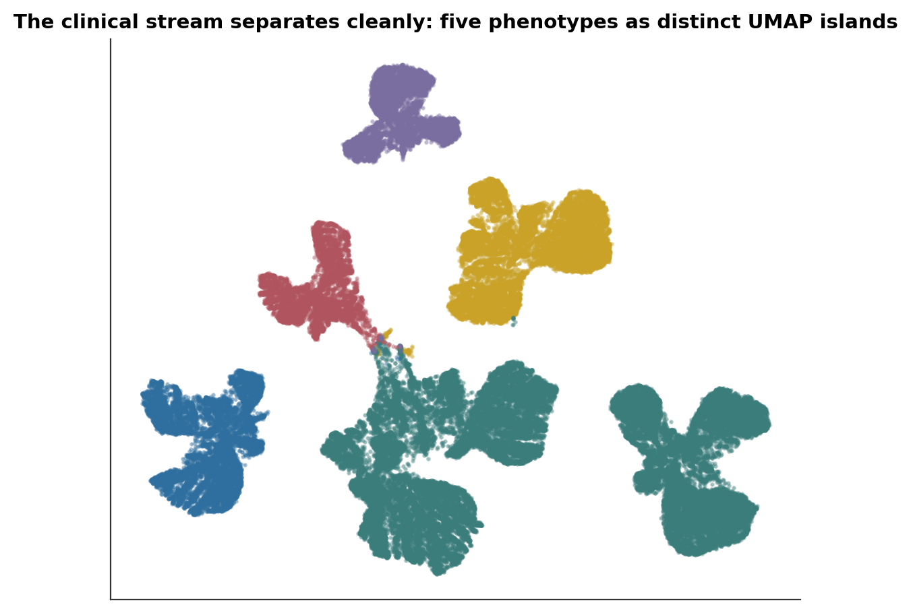
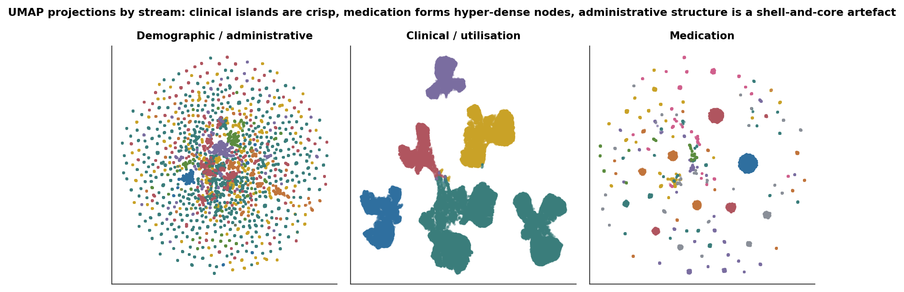
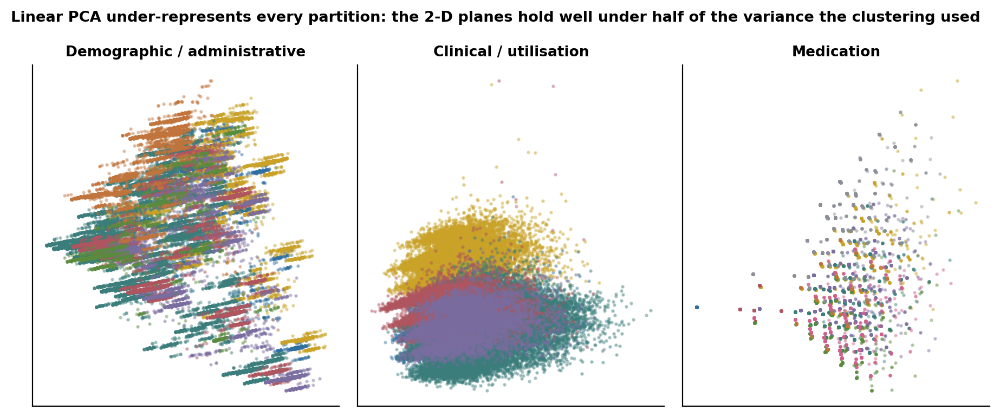
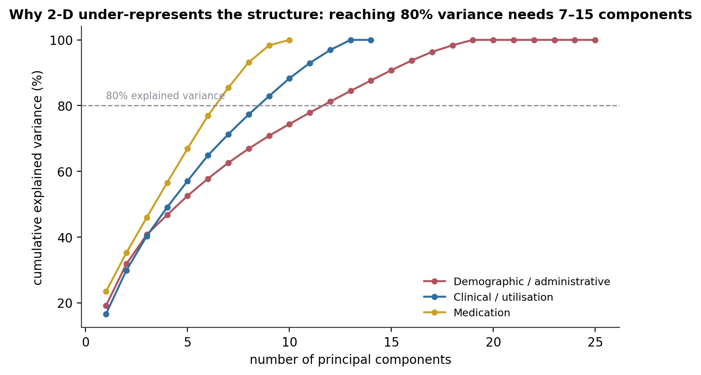
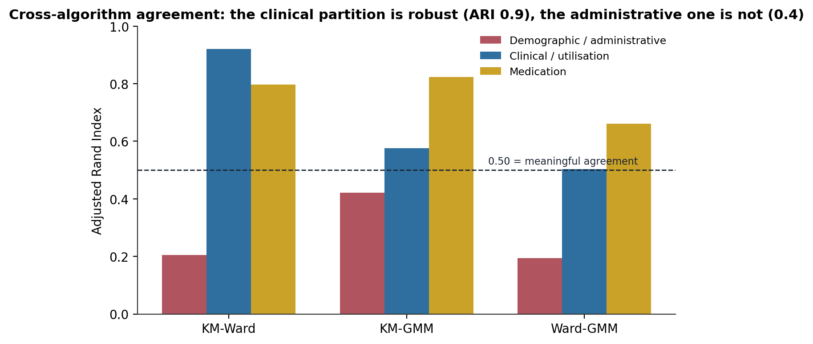
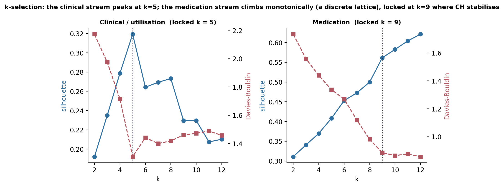
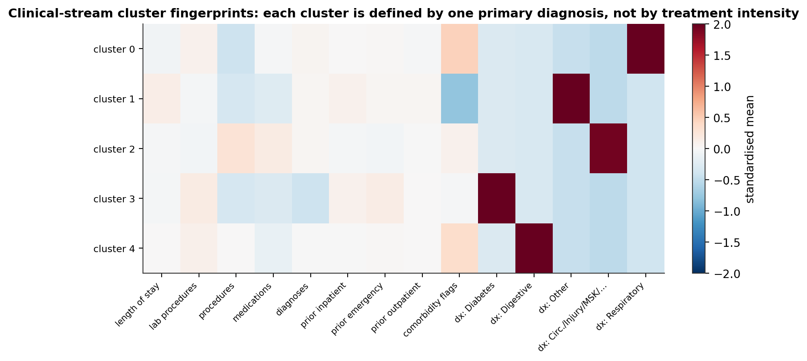
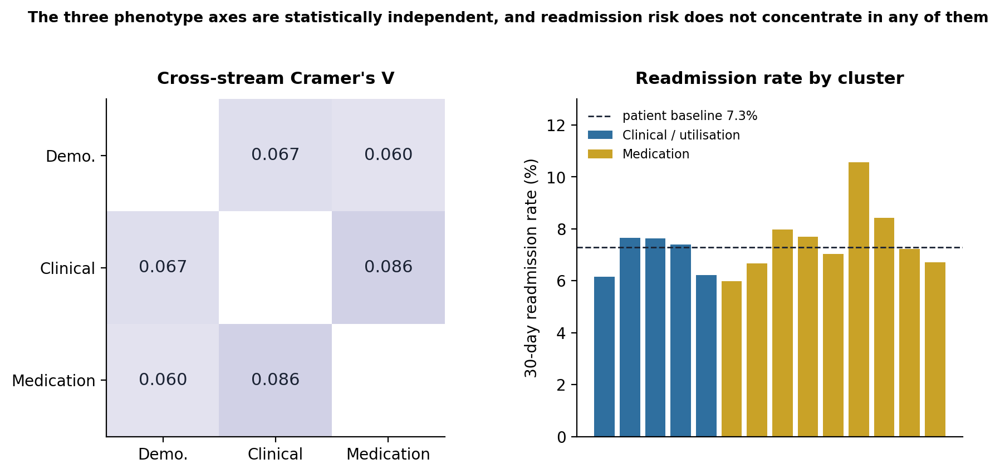

Three-Stream Patient Phenotyping: Feature-Space Structure, Not Algorithm Choice, Drives Cluster Quality
Clustering 69,987 diabetic patients along three orthogonal axes — who they are administratively, what brought them in clinically, and how they are medicated — with cross-algorithm agreement as the quality test and the readmission outcome held out until the end.
Label-free segmentation of a 69,987-patient diabetic cohort along three independently-clustered feature streams. The headline: cluster quality is set by the feature space, not the algorithm. The clinical/utilisation stream’s continuous features give the most robust partition — K-Means and Ward agree at ARI 0.92 on five diagnosis-defined phenotypes. The medication stream’s ordinal grid gives the highest raw separation (silhouette 0.56, nine treatment archetypes) but is a discrete lattice, not hidden clinical structure. The administrative stream’s one-hot categoricals give an honest negative — cross-algorithm ARI 0.42, a degenerate Gaussian mixture, and a 68% mega-cluster. Cross-stream: all three pairwise Cramér’s V are below 0.10 — the axes are genuinely independent. Post-hoc: readmission rate is flat across every cluster (±1.5 points around the 7.3% patient-level baseline), consistent with the diffuse-signal picture from the supervised and causal analyses.
unsupervised learning, clustering, K-Means, Ward linkage, Gaussian mixture model, adjusted Rand index, silhouette score, Davies-Bouldin index, UMAP, PCA, multi-stream clustering, patient phenotyping, Cramér’s V, cross-algorithm validation, Python
Abstract
This study segments a diabetic inpatient cohort into natural patient subgroups without reference to any outcome label. The feature space is partitioned into three conceptually distinct streams — demographic/administrative, clinical/utilisation, and medication — and each is clustered independently with three structurally different algorithms (K-Means, Ward agglomerative, Gaussian mixture), using cross-algorithm agreement as the quality test. The cohort is collapsed from 99,340 encounters to 69,987 patients by drawing one random admission per patient, so no feature row is a synthetic composite. The principal finding is that cluster quality is determined by the structure of the feature space, not by the choice of algorithm. The clinical/utilisation stream’s continuous features produce the most robust partition: K-Means and Ward agree at an adjusted Rand index of 0.92 on five clusters, each defined by a single primary diagnosis group. The medication stream’s ordinal grid produces the highest raw separation (silhouette 0.56, nine recognisable treatment archetypes) but its metrics improve monotonically with the cluster count — the space is a discrete lattice, not latent clinical structure. The administrative stream’s one-hot categoricals produce an honest negative result: cross-algorithm agreement of 0.42, a degenerate Gaussian mixture (every patient at maximum probability), and a single cluster holding 68% of patients. All three pairwise cross-stream Cramér’s V values are below 0.10, so the three phenotype axes are statistically independent — knowing a patient’s cluster on one axis is uninformative about the others. In a post-hoc comparison against the 30-day readmission outcome (held out of every feature matrix), the readmission rate is flat across every cluster, within roughly ±1.5 points of the 7.3% patient-level baseline, with one exception (a small oral-agent medication cluster at 10.6%).
Keywords: unsupervised learning, multi-stream clustering, K-Means, Ward linkage, Gaussian mixture model, adjusted Rand index, silhouette, cross-algorithm validation, patient phenotyping
Introduction
The supervised stages of this project asked who is at risk of 30-day readmission and found the answer diffuse — no dominant predictor, a ROC-AUC ceiling near 0.67, a causal null on the one hypothesised lever. This stage asks a different question: what natural patient subgroups exist in this cohort at all, independent of the outcome?
The design is multi-stream clustering. Rather than pooling every feature into one distance matrix, the feature space is split into three conceptually distinct streams and each is clustered on its own. This keeps each matrix’s dimensionality modest (so Euclidean distance stays informative), lets the interpretation be domain-specific, and creates a genuine cross-stream validation question: are the three partitions statistically associated — cross-cutting views of one latent structure — or independent?
Two disciplines are fixed. The outcome is held out. The readmission target and the causal treatment variable appear nowhere in any feature matrix; they enter only in a post-hoc comparison after the structure has been found. Cross-algorithm agreement is the quality bar. A high silhouette from one algorithm proves little; a high adjusted Rand index between two structurally different algorithms is evidence that the structure is real geometry in the data rather than one method’s inductive bias.
Method
Cohort and patient-level collapse
The source is the Diabetes 130-US Hospitals for Years 1999–2008 dataset (Strack et al., 2014; Clore et al., 2014). The modelling cohort is 99,340 encounters from 69,987 patients, 30% of admissions being repeat visits. Clustering has no structural guard against repeat patients — near-duplicate rows would distort centroids and inflate quality metrics — so the cohort is collapsed to one row per patient. Profiling the repeat patients showed that a modal-diagnosis or feature-average collapse would fabricate composites: primary diagnosis changes between visits for 62% of two-visit patients, and only medication features are within-patient stable. The collapse therefore draws one random admission per patient (seed 42), keeping every row a real clinical encounter. Because repeat patients readmit at higher rates, the patient-level readmission rate falls to 7.3% from the 11.4% encounter-level rate.
Feature streams
Stream A — demographic/administrative (25 features). Age (continuous), gender (binary), and one-hot encodings of race, payer code, admitting specialty, admission type, admission source, and discharge disposition, each collapsed to a handful of clinically meaningful groups before encoding.
Stream B — clinical/utilisation (14 features). Eight continuous measures (length of stay, lab-procedure count, medication count, procedure count, diagnosis count, and three prior-utilisation counts), a four-level comorbidity-flag count, and five one-hot dummies for the primary diagnosis group.
Stream C — medication (10 features). Eight diabetes-drug columns as domain-ordered ordinals (not prescribed = 0, steady = 1, dose down = 2, dose up = 3), plus two binary flags (any diabetes medication, any regimen change).
All three matrices were standardised (zero mean, unit variance) after encoding.
Clustering and validation
Each stream received a k-selection sweep over k = 2–15 on four metrics — silhouette (Rousseeuw, 1987), Davies–Bouldin (Davies & Bouldin, 1979), Calinski–Harabasz (Caliński & Harabasz, 1974), and inertia — with convergence (two or more metrics turning at the same k) as the selection signal. At the locked k, three algorithms were fitted: K-Means (Lloyd, 1982), Ward agglomerative (Ward, 1963), and a Gaussian mixture (McLachlan & Peel, 2000). Their partitions were compared pairwise by the adjusted Rand index (Hubert & Arabie, 1985), with 0.50 as the threshold for meaningful agreement. Clusters were profiled in the original unscaled feature space, and each stream was projected to 2-D by PCA (linear) and UMAP (McInnes et al., 2018). Cross-stream association between the three primary partitions used bias-corrected Cramér’s V.
Reproduction
The persisted label arrays, scalers, and PCA/UMAP coordinates were loaded from disk. The adjusted-Rand indices, the cross-stream Cramér’s V values, the per-cluster readmission rates, and the diagnosis composition of every cluster recompute exactly from the persisted labels. The three feature matrices were rebuilt from the collapsed patient table for the silhouette, Davies–Bouldin, and PCA-scree diagnostics; those depend on which admission the seed-42 draw selects for each repeat patient, and a deterministic re-draw shifts the clinical-stream silhouette upward (about 0.32 versus the original run’s 0.23) without changing the k-selection shape or any qualitative conclusion.
Software
Python 3.10 with scikit-learn 1.2 and umap-learn.
Results
The clinical stream: robust, and diagnosis-defined
The clinical/utilisation stream produced the most robust partition of the three (Figure 1, Figure 5, Table 1). The silhouette peaks cleanly at k = 5 (0.229, the global maximum), Davies–Bouldin steps down at the same k, and — the deciding evidence — K-Means and Ward agree at an adjusted Rand index of 0.92, far above the 0.50 bar and a step change from the administrative stream’s best of 0.42.
The five clusters are defined by primary diagnosis, not by treatment intensity (Figure 7, Table 2). Three clusters are single-diagnosis: 100% respiratory (n ≈ 9,500), 100% diabetes-as-primary (n ≈ 5,700), 100% digestive (n ≈ 6,500). A fourth absorbs the residual “Other” ICD-9 bucket, and the largest (n ≈ 36,000, 51% of patients) mixes circulatory admissions with injury and musculoskeletal. The continuous clinical features — length of stay, labs, medications, procedures — vary only modestly across clusters: the axis of differentiation is what brought the patient in, not how intensively they were treated.
Table 1
Cluster Quality by Feature Stream (patient-level, n = 69,987)
| Stream | Features | k | Silhouette | Davies–Bouldin | Best cross-algorithm ARI |
|---|---|---|---|---|---|
| Demographic / administrative | 25 (one-hot) | 7 | 0.16 | 1.96 | 0.42 (K-Means–GMM) |
| Clinical / utilisation | 14 (mostly continuous) | 5 | 0.23 | 1.66 | 0.92 (K-Means–Ward) |
| Medication | 10 (ordinal + binary) | 9 | 0.56 | 0.88 | 0.82 (K-Means–GMM) |
Note. Higher silhouette and lower Davies–Bouldin are better. The Gaussian mixture produced a degenerate hard assignment in every stream (every patient at or near maximum posterior probability), so its partition is reported but its soft membership carries no information.
Table 2
Clinical / Utilisation Stream — Five K-Means Clusters (patient level)
| Cluster | n | Defining primary diagnosis | 30-day readmission rate |
|---|---|---|---|
| 1 | 9,482 | Respiratory (100%) | 6.2% |
| 2 | 12,377 | Other ICD-9 residual (100%) | 7.7% |
| 3 | 35,993 | Mixed — Circulatory (59%) + injury, musculoskeletal | 7.6% |
| 4 | 5,667 | Diabetes-as-primary (100%) | 7.4% |
| 5 | 6,468 | Digestive (100%) | 6.2% |
Note. Patient-level readmission baseline 7.3%. Length of stay, lab counts, medication counts, and procedure counts vary only modestly across the five clusters — the axis of separation is the primary diagnosis, not treatment intensity.

The medication stream: high separation, but a lattice
The medication stream has the highest raw quality metrics — silhouette 0.56, Davies–Bouldin 0.88 — and its nine clusters map onto recognisable pharmacotherapy archetypes (Table 3): a no-diabetes-medication group (~24% of patients), a stable insulin-only group (~24%), an insulin down-titration group (~18%), and six smaller clusters each anchored by one oral agent. But the metrics improve monotonically with k, from silhouette 0.31 at k = 2 to 0.70 at k = 15 with no turnover (Figure 6). That is the signature of a discrete lattice: eight four-level ordinal columns plus two binary flags form a combinatorial grid of distinct prescribing patterns, and more clusters simply slice it finer, each slice internally tight. The clustering has recovered the hospital system’s formulary structure from patient-level data — useful as a compact segmentation of pharmacotherapy — but the tight metrics are partly tautological, not a discovery of hidden clinical subgroups. Cross-algorithm agreement is nonetheless strong (K-Means–GMM 0.82), and this is the only stream where the Gaussian mixture flags any ambiguous patients (256, or 0.4%, at a boundary between two archetypes).
Table 3
Medication Stream — Nine K-Means Archetypes (patient level)
| Archetype | n | 30-day readmission rate |
|---|---|---|
| No diabetes medication | 16,680 | 6.0% |
| Stable insulin only | 16,934 | 7.7% |
| Insulin dose-down titration | 12,692 | 8.4% |
| Oral-agent-anchored cluster A | 6,025 | 7.2% |
| Oral-agent-anchored cluster B | 4,755 | 8.0% |
| Oral-agent-anchored cluster C | 4,474 | 7.0% |
| Oral-agent-anchored cluster D | 4,214 | 6.7% |
| Oral-agent-anchored cluster E | 3,276 | 6.7% |
| Repaglinide-anchored | 937 | 10.6% |
Note. The three largest archetypes are an untreated group, a stable-insulin group, and an insulin-down-titration group; the remaining six are each anchored by one oral hypoglycaemic agent (glipizide, glyburide, glimepiride, pioglitazone, rosiglitazone, repaglinide). The repaglinide-anchored cluster is the only one whose readmission rate departs the 7.3% patient-level baseline by more than 3 points.
The administrative stream: an honest negative
The demographic/administrative stream did not cluster well, and the analysis keeps that as a documented result rather than forcing an interpretation. The best cross-algorithm agreement is 0.42 — the three algorithms substantially disagree on how to partition the space. The Gaussian mixture collapses entirely to hard assignment (every patient at posterior probability 1.0), because one-hot binary axes cannot support smooth probability gradients. The Ward partition places 68% of patients in a single undifferentiated cluster, with the smaller clusters tracking payer code and admitting specialty. The reason is structural: one-hot categorical features form a discrete, high-dimensional space where Euclidean distance is poorly defined; a categorical-native method (multiple correspondence analysis, or Gower’s distance in the clustering step itself) would be the appropriate tool and is noted as a future direction.
PCA under-represents every partition
The 2-D PCA projections all look heavily overlapped (Figure 3), but that is a projection artefact. The first two principal components hold well under half of the total variance for every stream, and reaching 80% of the variance needs roughly 12 principal components for the administrative stream, 9 for the clinical stream, and 7 for the medication stream (Figure 4). The clusters were computed in the full 25-, 14-, and 10-dimensional spaces, and any linear 2-D or 3-D view necessarily discards most of the distance structure that produced them. UMAP, which preserves local neighbourhood structure using all the dimensions, recovers the separation the metrics imply — cleanly for the clinical stream, as hyper-dense nodes for the medication stream, and as a shell-and-core artefact for the administrative stream (Figure 2).






The three axes are independent, and readmission is flat
The cross-stream test returns two clean negatives (Figure 8, Table 4). The three streams are statistically independent — all three pairwise Cramér’s V values are below 0.10 (A–B ≈ 0.067, A–C ≈ 0.060, B–C ≈ 0.086), negligible by conventional bands. Knowing a patient’s administrative cluster tells you nothing about their clinical or medication cluster. The three axes — who a patient is administratively, what brought them in clinically, how they are medicated — are genuinely orthogonal in this cohort, which means a targeting scheme built on administrative proxies would systematically miss the clinical and medication signal.
And readmission risk does not concentrate in any cluster. Held out of every feature matrix, the 30-day readmission rate is flat across all three partitions — most clusters within ±1.5 points of the 7.3% patient-level baseline. The one exception is a small medication cluster (an oral-agent group, n ≈ 940) at 10.6%. This flatness is consistent with the diffuse-signal picture the supervised modelling and the causal analysis established: the outcome distributes broadly across the cohort’s phenotypic structure rather than living in a subgroup. One concentration worth flagging for any future use of these labels: the diabetes-as-primary clinical cluster over-represents African American patients (~29% versus ~18% cohort-wide) and is the youngest and most-tested cluster — a fairness-monitoring consideration if the clinical labels are ever used to route interventions.
Table 4
Cross-Stream Association and Readmission Spread
| Comparison | Bias-corrected Cramér’s V | Interpretation |
|---|---|---|
| Administrative × Clinical | 0.067 | Independent |
| Administrative × Medication | 0.060 | Independent |
| Clinical × Medication | 0.086 | Independent |
| Readmission rate across all clusters | — | 5.9%–10.6% (baseline 7.3%); one cluster > baseline + 3 pp |

Discussion
Principal findings. Feature-space structure, not algorithm choice, sets cluster quality. Continuous clinical features gave a partition two structurally different algorithms agreed on almost exactly (ARI 0.92); an ordinal medication grid gave high separation that is really a lattice; one-hot administrative categoricals gave an honest negative. The three phenotype axes are independent, and none of them concentrates readmission risk.
The mechanism is about distance geometry. K-Means, Ward, and a Gaussian mixture agree when the feature space has continuous, graded variation that supports a well-defined Euclidean distance — the clinical stream. They disagree, and the Gaussian mixture degenerates, when the space is a set of discrete binary axes — the administrative stream — because there is no smooth structure for the algorithms’ different assumptions to converge on. The medication stream sits in between: discrete but ordered, so the algorithms mostly agree, but the “clusters” are grid cells, not latent groups.
Value and limitations. The clinical partition is a defensible five-way patient segmentation and the medication partition is a compact map of prescribing patterns; the patient-level labels are exported for use as stratification or fairness-audit dimensions. But the clinical clusters are diagnosis restatements more than novel phenotypes, the medication clusters are partly tautological, the administrative clustering failed, and the random-admission collapse discards within-patient variation for the 23% of patients with repeat visits. The readmission comparison is descriptive and post-hoc. Nothing here is a causal or predictive claim.
Conclusion. The cohort has real, independent phenotypic structure on a clinical and a pharmacotherapy axis, and none on an administrative one — and readmission risk sits across all of it rather than within any part. The most transferable lesson is methodological: match the distance metric and the algorithm family to the feature space before reading anything into a silhouette score.
References
Caliński, T., & Harabasz, J. (1974). A dendrite method for cluster analysis. Communications in Statistics, 3(1), 1–27. https://doi.org/10.1080/03610927408827101
Clore, J., Cios, K., DeShazo, J., & Strack, B. (2014). Diabetes 130-US Hospitals for Years 1999–2008 [Data set]. UCI Machine Learning Repository. https://doi.org/10.24432/C5230J
Davies, D. L., & Bouldin, D. W. (1979). A cluster separation measure. IEEE Transactions on Pattern Analysis and Machine Intelligence, PAMI-1(2), 224–227. https://doi.org/10.1109/TPAMI.1979.4766909
Hubert, L., & Arabie, P. (1985). Comparing partitions. Journal of Classification, 2(1), 193–218. https://doi.org/10.1007/BF01908075
Lloyd, S. P. (1982). Least squares quantization in PCM. IEEE Transactions on Information Theory, 28(2), 129–137. https://doi.org/10.1109/TIT.1982.1056489
McInnes, L., Healy, J., & Melville, J. (2018). UMAP: Uniform manifold approximation and projection for dimension reduction. arXiv:1802.03426. https://doi.org/10.48550/arXiv.1802.03426
McLachlan, G. J., & Peel, D. (2000). Finite mixture models. Wiley. https://doi.org/10.1002/0471721182
Rousseeuw, P. J. (1987). Silhouettes: A graphical aid to the interpretation and validation of cluster analysis. Journal of Computational and Applied Mathematics, 20, 53–65. https://doi.org/10.1016/0377-0427(87)90125-7
Strack, B., DeShazo, J. P., Gennings, C., Olmo, J. L., Ventura, S., Cios, K. J., & Clore, J. N. (2014). Impact of HbA1c measurement on hospital readmission rates: Analysis of 70,000 clinical database patient records. BioMed Research International, 2014, 781670. https://doi.org/10.1155/2014/781670
Ward, J. H. (1963). Hierarchical grouping to optimize an objective function. Journal of the American Statistical Association, 58(301), 236–244. https://doi.org/10.1080/01621459.1963.10500845
Descriptive unsupervised analysis on a single historical extract. The cluster labels describe structure, not risk; the readmission comparison is post-hoc and carries no predictive or causal claim.